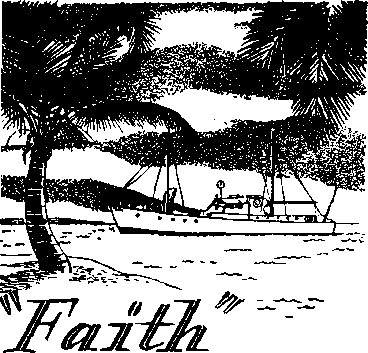

What are you really celebrating at Christmas time?
Amazing new field of radio astronomy clearly explained
Not expense, but ’’know-how” is important
k Jesus was not born in December!
DECEMBER 8, 1954 semimonthly
THE MISSION OF THIS JOURNAL
News sources that are able to keep you awake to t^e vital issues of our times must be unfettered by censorship and selfish Interests. “Awake 1” has no fetters. It recognizes facts, faces facts, is free to publish facta. It is not bound by political ambitions or obligations; it is unhampered by advertisers whose toes must not be trodden on; it is unprejudiced by traditional creeds. This journal keeps itself free that it may speak freely tp you. But it does not abuse its freedom. It maintains integrity to truth.
“Awake I** uses the regular news channels, but is not dependent on them. Its own correspondents are on all continents, in scores of nations. From the four comers of the earth their uncensored, on.*the-scenes
reports come to you through these columns. This journal's viewpoint is not narrow, but Is international. It is read in many nations, in many languages, by persons of all ages. Through its pages many fields of knowledge pass in review—government, commerce, religion, history, geography, science, social conditions, natural wonders—why, its cover’ age is as broad as the earth and as high as the heavens.
“Awake 1” pledges itself to righteous principles, to exposing hidden foes and subtle dangers, to championing freedom for all, to comforting mourners and strengthening those disheartened by the failures of a delinquent world, reflecting sure hope for the establishment of a right* eous New World.
Get acquainted with “Awake 1*’ Keep awake by reading “Awake!”
Published semimonthly By watchtower bible and tract SOCIETY, INC.
117 Adama Street
N. H, Knobs, President
Printing this i«*ue: 1,300,000
UmiiraiM In which this magazine Ie pnblhhei: Semimonthly—Afrikaans, English, Finnish, French, German, HollsndUh, Norwegian, Spanish, Swedish. Monthly—Danbh, Or wk, Portuguese, Ukrainian.
Offices Yearly subscription rate
America, U.S., 117 Adana St, Brooklyn 1, NX $1 Aistrallt, 11 Beresford Rd., Strathfleld, N.S,W. 8/-Canada, 40 Irwin Ave., Toronto 5, Ontario $1 England, 34 Craven Terrace, London, W. 2 7/-
New Zealand, G.F.O. Box 30, Wellington, C. 1 7/* Soith Africa, Private Bag, Elandsfonteln, Tri. 7/~
Entered as second-class matter at Brooklyn, N.Y.
Brooklyn 1, N. Y., IL S. A. Grant Suiter Secretary
Five cents a copv
BemlttanttE should be sent to office Ln your conn • try In compliance with regulations tn guarantee sate delivery of money, Remittances are accepted at Brooklyn from countries where no office Is located, by international money order only. Subscription rates in different countries are here stated In local currency. Notice Of axpIratlM (with renewal blank) Is sent at least two Issues before subscription expires. Changs of addrm when snt to our office may be expected effective within one month, Send your old as well as new address,
Art of March 3,' 1879. Printed In U.S.A,
CONTENTS
Christmas Makes Dollars but No Sense
Celebrating "Christmas" Before Christ
Myths, Legends and Superstitions
“Cosmic Ears” Probe the Universe
The Secret of Being Well-dressed
Fanagalo—a Common Language
The Stowaway with a Sinister Appetite 24 "Your Word Is Truth”
*
CALL it anything you wish, spell it any way you will, measure it, if you please, but when you are through you will find that it all adds up to one and the same thing—Christmas—a colossal fraud converted into dollars but no sense.
In the business world Christmas means only one thing—money, and more money. The Christmas "spirit” is the frenzied emotion that is generated through the rapid intake of dollars in the department store. By forcing the popular Christmastide along by means of a relentless pressure of propaganda by pr^ss, radio, television, educational institutions and every other vehicle that hires itself out for commercial exploitation; plus employing the medium of attractive “come-ons,” such as, lavish window displays, fashionable shows, free rides, extended credits, cut-rate prices, and (as an afterthought) a dash of “spirituality,” specialists and technicians in the commercial world whet the appetites and whip the people into an emotional lather for Christmas shopping. This potent concoction is so devastatingly effective that without the devoted complicity of the department store Christmas would not be Christmas to most North Americans. Dollars, therefore, make Christmas, and Christmas
makes dollars. But does it make sense?
Probably the celebration’s most brutal hoax is the most lucrative one—the one that attacks the tender morals of the innocent children and is gingerly tossed about by “saint” and sinner alike—the one called Santa Claus. Dollars have made Santa Claus the central figure in the Christmas celebration. Said a Catholic priest of Antwerp, Belgium: “Were a Hottentot or a Polynesian to visit the towns of Belgium in these days, he would be convinced that on Christmas the Christians celebrated an old man who gives presents.” After seeing a half-dozen Santas in a single United States department store, a young Catholic lad asked his mother: “Does baby Jesus bring Santa Claus, or is it the other way round?”
Christmas promotes another moneymaking scheme, that of selling Christmas cards and stamps. Love is not always the motive for sending cards bearing greetings and best wishes; in fact, it rarely is. From all sides the people are pommeled with the idea that they must give something, a gift, a card, something to their pals; everybody is doing it; it is the popular thing, a social custom that should not be ignored. Failure to buy a gift or send a card—horrors! It is the worst of social errors! As a result,
close to two billion cards are unloaded on the gullible American public in a brief season, with a glamorous take of $110,000,000!
made about being
During these “holy” days the word “charity” is often heard and pockets are emptied of millions of dollars, with an extra amount of publicity about the same. How unlike Jesus do these celebrants give! He gave without asking in return, and he gave all that he had, even, his very life. He gave to all without special occasion or days and without partiality. But today on Christmas Day a showy splurge is charitable to ig, openhanded, and god-fear-g, but the remaining 364 day s—L o o k out! Jesus exposed such hypocrisy in these words: “Take good care not to practice your righteousness in front of men in order to be observed by them; otherwise you will have no reward with your Father who is in the heavens. Hence when you start making gifts of mercy, do not blow a trumpet ahead of you, just as the hypocrites do in the synagogues and in the streets, that they may be glorified by men. Truly I say to you, They are having their reward in full. But you, when making gifts of mercy, do not let your left hand know what your right is doing, that your gifts of mercy may be in secret; then your Father who is looking on in secret will repay you.”—Matt. 6:1-4, New World Trans.
Dollars are so much a part of Christmas and Christmas so much a part of this world that according to Business Week for November 28, 1953: “What happens in the next four weeks [prior to Christmas] will affect just about every kind of business in the economy” of the United States. To many department stores Christmas is often a do-or-die, survive-or-perish . proposi
tion. Over $80 billion worth of merchandise was in the pipelines awaiting the 1953 Christmas season. Saleswise, Christmas means that from 18 to 41 per cent of annual retail sales will occur in the last two months of the year. Savings accounts alone, such as the “Christmas Club” arrangement, poured out “a whopping $900 million” to its members. These dollars make Christmas “merry,” especially for the business world.
Nothing, therefore, is held back that would promote Christmas. Sometimes a whole year in advance plans are weighed and made; persona] savings are determined and commercial piggy banks looked into. Once arrangements are complete and agreements made as to what kind of Christmas to give to the people, that is, a “family,” “old-fashioned” or "spiritual” Christmas, then the business world goes all-out to make Christmas a successful business. Holly is shipped in from Italy, ferns from Java, tumbleweed from Texas, stores are renovated, all for the big day! Retail stores in the United States last year spent $30 million to turn their windows into a shopper’s art gallery. Macy’s in New York city spent “an estimated $75,000 to show what a white Christmas looked like in 1850”; Dallas, Texas, borrowed “a $35,000 display of art masterpieces"; Neiman-Marcus had a $25,000 display of cherubs clanging cym-
bals and playing games under a pastel sky. On the average sixty per cent of retail store display budgets is taken up by Christmas. If customers are sluw to respond stores might even conduct fashion shows daily to promote business, or extend their credit an extra thirty days. Some give free trolley rides, free shows and tea.
If the Christmas business "crystal ball” gives out ominous signs of a slow year merchants will not even wait for Thanksgiving to launch the Christmas campaigns. Fortune magazine for January, 1950, reported that Christmas “was more aggressively commercial than ever. ... In Denver three separate Santa Clauses sponsored by three separate business groups hit town before Thanksgiving. Two arrived by airplane and one confounded the children by driving up in a white 1950-model Hudson. In Charleston, South Carolina, a little girl watching a pre-Thanksgiving Christmas parade was [struck] on the head with a whiskey bottle tossed from one of the cars. Whatever the cultural significance may have been, the business implication was simply that merchants needed good Christmas sales badly.”
Dollars, therefore, not Christ, make Christmas. The fact that religious people celebrate it does not make it Christian, any more so than the Fourth of July is made Christian foF the same reason. Dollars buy the holly, mistletoe and the Christmas tree. Dollars buy the decorations and the presents. Dollars buy the candy and cards, the mince pie and nuts. Dollars buy the punch and liquor. Dollars make Christmas. What would Christmas be without the Christmas tree? Without Santa Claus? Without the gifts and cards, the holly and mistletoe? Dollarless Jesus would have found it burdensome to celebrate his own birthday in our modem commercial fashion. From all historical and Scriptural facts, if on earth today as a man, he would not take part in the Christmas celebration. Learn why by reading the following article and the One on page 25.
CELEBRATING 'Cfirfamas? BEFORE CHR
Th* foltaying crtld* owwtrt.
What oecotfo* dto yw on
ChrliMMt Day? yew tartly ChfMmo* Mtt a pOfpn ** a Oirfe-
has been so utterly void of Christianity.
For thousands of years before Jesus was born, the month of December had been the occasion for boisterous pagan revelries. Primitive man worshiped the sun as the
NO HOLIDAY has been so enthusiastically received and universally acclaimed throughout Christendom as Christmas, yet none
source of life and light, a manifestation of the gods. The return of the sun after the shortest day of the year was cause for great rejoicing, A wild celebration ensued that lasted for weeks. It became the greatest of all festivals, the feast of the winter solstice, a celebration in honor of the unconquered sun. Homes were adorned with evergreens and mistletoe, gifts were exchanged, great feasting and merrymaking were all a part of the pagan celebration. It is this same feast that the civilized world of today still possesses; and persons of “Christian,” Jewish, Moslem, Buddhist, Shinto, Fascist, Communist and many other faiths—and some of no particular religious faith at all—celebrate the feast, conscious or unconscious, as the case may be, of its original pagan significance.
By making Christmas coincide with the ancient pagan festival the newly formed Roman Catholic Church in the fourth century hoped to counteract the winter revelries. But pagan festivities were too deeply rooted. The heathens continued their winter festival with great and extended rejoicing. They called their feast the Saturnalia, after Saturn, the god of agriculture. At first the Catholic Church frowned on the Saturnalia as ungodly, degrading paganism. Later, however, she became completely absorbed by it, accepting and allowing it to be assimilated into her religion. She gave the pagan feast another name. She called it the “mass of Christ” or “Christmas.”
Celebrating Christmas before Christ might seem strange, even paradoxical in meaning. But note what the authority, Sir James George Frazer, had to say in his widely praised book The Golden Bough, pages 358, 359; “An instructive relic of the long struggle is preserved in our festival of Christmas, which the Church seems to have borrowed directly from its heathen rival. In the Julian calendar the twenty-fifth of December was reckoned the winter solstice, and it was regarded as the Nativity of the Sun, because the day begins to lengthen and the power of the sun to increase from1 that turning-point of the year. The ritual of the nativity, as it appears to have been celebrated in Syria and Egypt, was remarkable. The celebrants retired into certain inner shrines from which at midnight they issued with a loud cry, 'The Virgin has brought forth! The light is waxing!’ The Egyptians even represented the new-born sun by the image of an infant which on his birthday, the winter solstice, they brought forth and exhibited to his worshipers. No doubt the Virgin who thus conceived and bore a son on the twentyfifth of December was the great Oriental goddess. . . . The Gospels say nothing as to the day of Christ’s birth and accordingly the early Church did not celebrate it. . . . The heathen origin of Christmas is plainly hinted at, if not tacitly admitted, by Augustine when he exhorts his Christian brethren not to celebrate that solemn day like the heathen on account of the sun, but on account of him who made the sun. In like manner Leo the Great rebuked the pestilent belief that Christmas was solemnised because of the birth of the new sun, as it was called, and not because of toe nativity of Christ.”
Long before Christianity came to toe barbaric northlands of Europe, a similar winter festival, known as the Yule, took place. The ancient Vikings believed that the sun traveled on a wheel and as the days got shorter and the sun sank lower each day they were not so sure that the wheel would keep on turning, but when the days began to get longer toe Vikings celebrated Yuletide, or Wheel Time, Great logs were set ablaze in honor of toe gods Odin and Thor, and people clustered around drinking from horns filled with mead and listening to pagan carols. The Saxons on this day would drink their ale out of the skulls of their vanquished enemies to the point of getting “gloriously drunk." Later the; changed their containers for the wassail bowls. These pagan worshipers gave gifts to their wives, sweethearts and friends —presents they had stolen from their victims. Yuletide was celebrated by all the heathens of northern Europe. It, like the Saturnalia of pagan Rome, became absorbed in the Roman Catholic religion by the mere changing of the name to Christmas.
Christmas Around the World
And so it is that today, wherever one is in the world, whether in heathendom or Christendom, and whatever the weather, the month of December, especially December 25, is a time for celebration! In northern Europe and in other countries preparations are made weeks and months in advance. In Norway the special Christmas smorgasbord is set forth. Norwegians sing carols round the tree, while the Jule-mssen, the Christmas elf, hands out the children’s gifts. In old Russia no meat was eaten until the first star appeared on Christmas Eve. Carolers masqueraded as monkeys, bears, elephants, but one was always Dye-dushka or Dado Moroz, Grandpa or Little Father vFrost, the Russian version for Santa Claus.
In Italy the mythical bearer of presents is not Santa Claus, but an old hag called Befana. She rides not on a sled pulled by reindeer, but rides the sky astride a broomstick, like a witch. According to legend she “deliberately misdirected the Wise Men as they journeyed to Bethlehem. Condemned to live forever for that evil deed, she must walk across the country giving presents to all the children of the world at Christmas in penance for her sin.” Giftgiving day is not December 25 but twelve days later. Families gather around the Ceppo, the Christmas log; offerings of fruits, nuts or vegetables are laid at the feet of the images of “baby Jesus.” To the Germans, Christmas is the gayest holy day of the year.
In France, Christmas is a day especially for children. Presents and cards are sent at the New Year rather than at Christmas. Armenians hail Christmas on January 6 by eating fried fish, lettuce and boiled spinach. They believe Mary ate spinach the night before Jesus was born. In Ethiopia, says the New York Times, “the natives believe that Christ had so many wonderful attributes that he could not have been born but once. Hence, they celebrate His birth once a month and twice in April.” In Austria, Santa Claus makes his rounds accompanied by the Devil, who punishes mischievous children and gives presents to the well-behaved. Little replicas of Saint Nick, and the Devil are placed under the Christmas tree.
January 6 is known to the Argentines as “Little Christmas,” and as “Dia de Reis’3 or Day of Kings to the Brazilians. Mexican children celebrate the holiday with fiestas and fireworks. Their mythological Santa Claus is called Quetzalcoatl, Quetzal for short, and is pictured as a plumed or feathered serpent. Non-Christian Japanese celebrate Sho-Gatsu, frequently referred to as the “Japanese Christmas.” It, too, is a time of giving gifts, sending cards, feasting, drinking and merrymaking. Grampa Ko-leda, the ancient god of winter, brings Christmas gifts to Bulgarians. As the man of the house strikes the burning yule log, producing a rain of spafks, he will say: “May the coming year bring this many horses, this many sheep, this many pigs,” etc. Yugoslavs cut a young oak for the yule log, and this is done with great religious ceremony. The sign of the cross is made before the ax is used. The tree must fall eastward at the moment of sunrise.
Myths, Legends and Superstitions
Christmas celebration is filled with pagan myths and superstitions. In some parts of England, France and Germany it is believed that at midnight on Christmas Eve oxen are able to speak; that they fall on their knees in honor of the newborn Jesus; that all trees and plants along the banks of the Jordan bow in reverence. It was thought in Scandinavian countries that the family dead'revisited their homes; meals for the dead were spread and the families slept in the straw, leaving their beds for the ghosts’ enjoyment. The Irish believed that the gates of paradise are left open at midnight on Christmas Eve; anyone dying at that moment enters at once, without going to purgatory. Other lands believed that it was unlucky to be born on Christmas Eve; that such would become werewolves. Scotsmen, on the other hand, believed that “those born on Christmas Eve or Good Friday have the power of seeing spirits, and even commanding them.’’ In Germany ■ some superstitious people still believe that “between eleven and twelve the night before Christmas water turns to wine,” The Druids thought the mistletoe had curative and protective powers; that it was a divine branch that came down from heaven; that the red berries of holly were drops of blood of the pagan god Bal-' der; that enemies became immediate friends under the mistletoe and so began the “kissing under the mistletoe” custom. Mistletoe was made into amulets and also a drink. The Druids would smack their lips over it as a cure for all evil. Now lips are smacked under it, however, not as a cure-all. Some of these kissing orgies became indeed violent. Around the world Christmas is mingled with superstition, myths and legend. In all this there is very little but pure paganism.
What does any or all of this have to do with the birth of Christ or with Christianity? Absolutely ndthing! Such are abominable pagan practices that defame the God of truth, Jehovah, and debase him before the universe to the level of a senseless, barbarous god. Nor is Jesus honored by always remembering him as a babe. He is the triumphant One! the glorious spirit creature that perfectly reflects God’s glory, “the exact representation of his very being.” Jesus is now “Lord of lords and King of kings,” “the leader and perfecter of our faith.” Jesus nowhere commanded that his birth be celebrated on any day. But he did call on his followers to rejoice with him in his victory. Unlike “baby worshipers” of Christmas time, Paul the apostle declares: “Consequently, from now on we [Christians] know no man according to the flesh. Even if we have known Christ according to the flesh, certainly we now know him so no more.” We know him as our King. And we hail him, not by worshiping pagan gods or carrying on pagan customs, but rather by following the pattern he set down for, us. He himself said: “If anyone loves me, he will observe my word, and my Father will love him.” “He that has my commandments and observes them, that one is he who loves me.” Much lip service and praise to the babe Jesus mean nothing. Works, deeds, and not words, are what count.—Hebrews 1:3; Revelation 17; 14; Hebrews 12:2; 2 Corinthians 5:16; John 14:23, 21, New World Trans.
In face of truth, then, why lie about Christmas’ being Christian when we know definitely that it is not? Why not admit that it is a pagan holiday void of Christianity? Why celebrate Christmas at all? There is no good reason, other than to please oneself and not God, which is idolatry. Sincere Christmas celebrants need face the truth if they wish not to incur God’s displeasure. “The truth will set yeu free.” —John 8:32, New World Trans.
tor?
Well, had your radio been a super-sensitive one and connected to a specialized directional antenna, you would have heard intermingled with the background noise a distinct hissing sound entirely different from the common staticlike noises so frequently heard. Although considered to be nuisances by the radio broadcasting fraternity in general, yet it has been discovered that when the local static noises are screened out the remaining background sounds are in reality caused by radio waves from outer space, messengers carrying vital information concerning the size and structure of the universe.
It was in August, 1931, when Jansky, a scientist of the Bell Telephone Laboratories, first began a series of systematic tests in an effort to determine, if possible, the source of these mysterious radio noises from space. Many people had been annoyed by their irritating sounds, but, apparently, nobody ever did anything about it. Jansky determined to begin a search for their origin at least. Today, after more than two decades of research by scores of scientists, their source still remains a mystery.
Though not fully understood, yet, strangely enough, in the endeavor to discover their source, scientists have found new facts about the universe which were little suspected at the time they began their investigations. As an outgrowth ot Jansky’s research a vast new field of radio astronomy has been opened up. Radio telescopes have sprung up like the proverbial “mushrooms” overnight so that today literally scores of them are in daily operation the world over. The new science of radio astronomy has been born.
Astronomers aver that its potentialities for space exploration are far greater than any optical telescope could possibly have. This for the reason, among others, that the “cosmic ears” of the radio telescope can detect waves passing through vast clouds of cosmic dust through which the optical telescope cannot possibly see. Already these “cosmic ears” have expanded the size of the universe to a distance of more than 6,000,000,000 light years. Its nearest optical rival, the “queen of telescopes” on top of Mt. Palomar, California, is limited in its vision to a mere 2,000,000,-000 light-years’ distance. Thus, as an outgrowth of the radio tests that were begun in 1931, the universe has been expanded to man’s gaze some twenty-sevenfold in so short a time. Other triumphs by this sprawling young giant are anticipated.
Since the days of Galileo the optical telescope has been the dominant instrument for astronomical research. By its use man’s view of the physical heavens is limited to what can be seen by the use of light
alone. Using such an instrument is analogous to trying to scan the entire realm of space from the inside of one small window fixed in the side of a house. An optical telescope can see only a narrow band of light ranging from red to violet, a band less than one octave wide; it is blind to everything above the ultraviolet and below the infrared.
Not so, however, with the radio telescope, Its range of “vision" is far greater, extending over many octaves far down to centimeter radio waves near the broadcasting spectrum. In effect, there is thus added a wide new picture window to our fictitious house through which astronomers can scan the universe. Thus there are now two windows made available to astronomers; one using light rays and the other using radio waves, Man’s knowledge of the universe can, therefore, be greatly enhanced by peering through both windows.
How They Worfc
How is it possible for a radio telescope to “see" into the vast dome of the physical heavens? When astronomers use a radio telescope, what do they “see," or do they see? Are there radio stations in the skies for astronomers to hear? If so, where are they located? What is the source of their power? Intriguing questions these, indeed! But, believe it or not, there are radio transmitters afloat in the heavens, powerful ones, too; transmitters that never cease their broadcasting, day or night. That this is true was not definitely known before the advent of radio telescopy. Now there is no doubt about their existence. They are being tuned in, are being heard, and their outputs are being measured daily.
In considering the manner whereby radio telescopes operate, at the outset it must be said that in the strictest sense they do not “see” as one does with his eyes. They operate in much the same way as any su-persensitive radio receiver does; the output is sound. The sound, however, may be (and generally is) translated automatically to some form of graph and thus is “seen" just as is done when what an optical telescope “sees” is translated to a photograph. In the final analysis both kinds of telescopes may thus be said to “see" into space.
An ordinary radio receiver such as is used in the home employs an antenna that picks up radio waves coming from all directions. In order to be useful as a telescope a specialized antenna system must be employed, one that is highly directional and is capable, therefore, of receiving radio waves from a small area in the sky only to which it is pointed. The most modern telescopes use an antenna structure having the shape of a hugb parabolic dish of open metallic construction. The larger such an antenna is, the greater is the capability of a telescope to concentrate its beam of “vision” in a small area in the skies. There is one presently in use that has a diameter of 600 inches, three times the diameter of the miiror on Mt* Palo-mar.
The parabolic antenna of a telescope must be so mounted that it can be made to scan the heavens in the same manner as is done with optical telescopes. They are mounted on frames whose motions are precisely controlled by time clocks. Thereby the telescope may be set on any point in the sky above the horizon and be made to follow automatically the apparent motion of the point as the earth slowly rotates on its axis.
The radio receivers used in telescopes possess highly specialized circuits and are of great sensitivity. In order to hear some of the sounds proceeding from interstellar space they must be capable of detecting radio waves so weak that the circuit noises
in the receiver itself far overpower the incoming waves. This can be done only by employing special devices to mask out the inherent receiver noises. It at once becomes apparent that an ordinary radio receiver such as is used in the home would be far too weak for telescopic work. There are certain radiations from outer space, however, that do come within the range of any ordinary radio receiver,.
Having our telescopic paraphernalia now all set and ready to use, we shall turn it to the skies to "see” what can be "heard” with our new “cosmic ear.” The sun being the mighty radio broadcaster it is, let us turn our telescope toward it first. The sun is 866,000.miles in diameter, so large by comparison that a radio telescope may be made to scan its entire disk progressively with good resolution. And what do we find? This: that its radiations of light, from red to violet, constitute but a small percentage of the total band of frequencies that it radiates. By making suitable tuning adjustments in the telescopic receiver, radio waves extending from the relatively short infrared radiations to waves in the meter region of the spectrum may be detected; but not continuously, however. There are gaps in the radio window through which waves .cannot pass. These gaps are caused by molecular absorption in earth’s atmosphere and by ionospheric reflection. When the parabolic antenna is directed toward the sun the intensity of the noise heard is always much greater than when it is directed toward the open sky. Thus proving that the source of, the noise radiations is in the sun.
When focusing the parabola on the sun continuously for many hours or days at a time, we find that the steady noise from a quiet sun is punctuated at irregular intervals by huge outbursts of sound. These outbursts often exceed that of the quiet sun by some ten thousand times. They exist but a few seconds or minutes at the most. During sunspot activity the average level of the quiet sun noise is greatly increased, again indicating the sun to be the source of the noise.
When one is studying the sun’s outbursts in more detail a significant fact is observed: sometimes these bursts are observed to exist on several different wave lengths, but not simultaneously. A burst observed on a particular wave length will be found to manifest itself on a longer wave length a few minutes later on. The amount of the delay Is a gauge whereby scientists can estimate the depth within the sun from which the burst originated, The absorption within the solar ionosphere is believed to be the cause of the time delay and shift in wave length. When the telescope is focused on a sunspot group the noise heard is greatly increased, again indicating the source to be the sunspot area.
Other measurements on sunspots show the radiations to be circularly polarized, just as should be expected to come from a huge vortex of magnetic energy such as sunspots are believed to be. Since any radio waves originating in the sun and observed on earth must pass through the full thickness of earth’s atmosphere to be detected, one of the vital adjuncts to radio telescopy, and one which benefits meteorologists, is a direct measurement of any vagaries that might exist in the structure of the atmosphere and ionosphere. Radio telescopic measurements of sunspot activity have demonstrated conclusively that radio-wave propagation on earth, magnetic storms and sunspot numbers are directly related to one another.
Space Speaks
The sun is a next-door neighbor in so far as the “cosmic ears” of the radio telescope are concerned. It is only fifteen millionths of one light year distant from
the earth. Radio waves from four quadrillion times the distance to the sun have been detected by the “cosmic ear.” The immensity of the power required to transmit over so great a distance can only be imagined. But what is the source of the power? the inquiring mind wonders. There are scientists who conjecture that the radiations originate from stars that once existed in the remote past but since have exploded and disintegrated themselves, their energy being dissipated throughout space.
Others have reasons to believe (and research has demonstrated their conclusions to be correct) that the source of the power resides in vast clouds of hydrogen gas afloat in space. One such is Professor H. C. Van de Hulst of the Leiden Observatory in Holland. He predicted in 1944 that a distinct note should be found in the cacophony of sounds from space in the twenty-one-centimeter region. In 1951 researchers tuned their telescopes to the frequency of 1420 megacycles (21 centimeters wave length or 1,420,000,000 cycles per second) and to their amazement a distinct high-pitched monotone was discovered just as was predicted. Great clouds of hydrogen gas are known to exist in interstellar space, as has been proved by making spectroscopic analysis of the light radiated from gas in the vicinity of hot stars. The heat from the stars ionizes the gas, causing it to radiate light, which, in turn, can be analyzed and identified.
Sweeping the parabola across the sky it has been discovered that there are many discrete pin-point spots in the heavens from which powerful radio waves are being transmitted and which bombard the earth incessantly. Several hundred of these points have been discovered to date. They are known as radio stars for the reason that they can be “seen” by radio telescopes only, just a few being visible to optical telescopes. What they are is an enigma. The power they radiate, in general, is greater than that from the sun, even though the sun is much nearer to the earth. One particularly strong radio star is located in the constellation Taurus near our galactic equator. Many others are along the same galactic line. In fact, it has been found that the radio telescope is more precise in defining the boundary of our galaxy than is the optical telescope.
In the constellation Cygnus, which is about 30,000,000 light years distant, a particularly interesting star has been discovered. This one contributes a number of tones simultaneously to the “music of the spheres,” and, further, the tones it contributes are not constant in intensity but are variable as though adding rhythm to the “symphony of the heavens.” Signals from Cygnus have been measured on 60, 85, 100, 150 and 200 megacycles. Also, the polarization of its radiations is not constant such as that from sunspots. Hence, the cause of Cygnus’ radiations may be due to a new kind of phenomenon different from what exists in the sun.
New cosmic radio transmitters are being discovered almost daily. Recently an intense tone has been found in the 3,300 megacycles (9 centimeters wave length) region from our own galaxy. Another was found in the “Orion” nebula, which is about 1,000 light years from the earth; and another in the “Swan” nebula, which is about 3,000 light years distant. The latter two transmitters are located within our own galaxy and are exceptionally powerful. Surely there is here a fruitful field of research opened wide for radio telescopy to answer the many baffling questions raised concerning these messengers from space. In time the answers may be found.
From the brief discussion of what radio astronomy has discovered within the two short decades of its existence, it becomes
quite apparent that the earth is immersed in a gigantic sea of electrical radiations that permeates all spade. “Cosmic ears’’ disclose that the night is not silent; space is not dead. Instead, the evidences are clear that the universe is a living, vibrant entity which was designed by an intelligent Creator and purposed to continue on throughout time indefinite. Improved types of “Jacob’s ladders” may yet be invented that will further enhance man’s vision of the physical heavens. When they are, then as' the vision of intelligent men is enhanced, so will also be enhanced the vision of the majesty and the power of the great Being who created them all, Jehovah God.
'<!
ERE is hardly a person in the world
clothes that are de-
that would not want to be attractive, pendent on simplicity
Most of us can be by being well-dressed. It does not take a lot of money or beautiful clothes to dress well. “In buying apparel,” says one fashion authority, “money is less important than it is in the case of almost every other commodity. I’ve known millionaires—by sight, at least—who invariably looked badly groomed, even sloppy, in their expensive clothes. And I’ve known plenty of so-called white-collar workers, with very little money to divert to their clothes purchases, who always looked like the proverbial million dollars! It’s all in the ‘know-how’ of selecting, wearing and caring for your clothes.”
To be attractively dressed signifies a number of things. It implies a beauty of face and figure, and of design, on suitabil- j||a!F ity to person and en-
Ottati
DBCEMBEK S, 1954
vironment and on im- OWlnB
peccable grooming. Ijf
It also implies good / ijk —L
health, proper poise and a pleasant pos- Ui ture. It suggests har
mony of colors, a subtle emphasis of design and rhythm of lines in the costume. It, in substance, says, “The clothes you are wearing fit your personality. They speak well of you. You have become pleasing to the eye —attractive.”
Clothes are not to hide or camouflage the wearer, even though at times they do create an optical illusion. A correct and becoming garment is not only pleasing in itself, but it will highlight the wearer, enhancing the beauty rf the face and body. Therefore the costume should not be more forceful, more striking, than the person wearing it Otherwise it would detract from one’s attractiveness. The garment should serve as a background for one’s
13
personality. Jesus of Nazareth, who wore a fine garment worth casting lots for, told his disciples to “take a lesson from the lilies of the field,... I say to you that not even Solomon in all his glory was arrayed as one of these.” The lily is breath-takingly beautiful. Its color and size are perfectly balanced, its lines are smooth and soft and its ornamentations are few but exquisite. Its delicate features blend perfectly into its leafy background. It silently compliments Jehovah its Creator, Men and women should so attire themselves.—Matthew 6:28, 29, New World Trans.
To help you to make a pleasant appearance, first acquire a large or full-length mirror and then make an honest appraisal of yourself. Sometimes a glance in a mirror is most disconcerting. But be of good courage, Analyze yourself. Know the color of your skin, the shape of your face, the color of your eyes, etc. Find out why certain colors look better on you than others do. Be as critical of yourself as you are of your neighbor and you will find room for progress and improvement. Try not to copy what other people wear, because what may look fine on them may not look good on you at all. Purchase clothes that suit you and fit your personality. Be yourself, not someone else. This takes courage.
Hasis for an Attractive Appearance
The foundation for an attractive appearance is based on harmony of color and design. To produce harmony there must be a certain amount of uniformity between colors, lines and shapes in the garment. Just enough contrast and variety should be added to avoid monotony and so that the costume might spring forth with new life and interest. This harmony and equality develop a sense of confidence and dignity and calmness in the wearer.
Another means of creating interest in a design is through emphasis. This is done by attracting more attention to one part of the garment than to other parts. The entire costume should have only one focal point, one center of interest. Usually this is the face. But often attention is directed to other sections of the body. If one has lovely hands and wishes to draw attention to them, a dainty white frill at the wrist will do the trick, or a sparkling ring or bracelets. The duchess of Windsor, not wishing to call attention to her short fingers, seldom wears rings. A necklace repeating the color of the eyes will call attention to a beautiful throat and an attractive face. A wide belt will flatter a tiny waist. Jewelry should not be worn thoughtlessly, but only after careful study before a mirror. It should be chosen for its relationship to face and neckline of the wearer and to harmonize with the design of the costume. Accessories should always appear integrally a part of the costume design and never as something extra, thrown in.
It is well to remember that the eyes are capable of enjoying only a few things at a time. If emphasis is stressed in several places, then the picture becomes blurred and the entire effect is destroyed. The amount of emphasis to use depends largely on your personality. If you are the dramatic type of person, striking in appearance, you can wear clothes with exotic color combinations and unusual in design, because they enhance your.characteristics. But, if you are the quiet, reserved type of person you should temper the lines and colors of your wardrobe. Your costume should serve simply as background for your personality, Elizabeth Hawes referred to this harmony when she said: “I believe that the color of a woman’s dress must be becoming to h£r mind,” This means that clothes should proclaim the man or woman, and they will, if you are properly dressed.
The Secret of Simplicity
What to strive for is emphasis simplicity, a simplicity in design that is pleasant and feminine, that carries with it a spirit of restraint that is subtle and beautiful. To assure yourself the right amount of this subtle simplicity, stand before a large mirror after you are completely dressed, then take off all irrelevant detail. This will eliminate any accessories that are not needed to improve the beauty of the costume. The Greek and Japanese schools of art insisted upon the need of simplicity for beauty. Apostles Paul and Peter called upon Christian fromen to do away with needless accessories that detract from the natural feminine beauty. Paul said: “Likewise I desire the women to adorn themselves in well-arranged dress, with modesty and soundness of mind, not with styles of hair braiding and gold or pearls or very expensive garb, but in the way which befits women professing to reverence God, namely, through good works.” Fashion experts uphold Paul. They assert that especially American women have the terrible habit of overadorning themselves. One authority remarked: “Occasionally one sees a woman who looks as though she has assembled on herself the accumulation of all the ideas she has been exposed to.” By doing so she violates the rule of balance, simplicity and modesty. Also, good taste in clothes in one country may be bad in another. But complete simplicity, achieved by a clever cut and proper fitness, can be worn almost anywhere in the world without offense.—1 Timothy 2:9, 10, New World Trans.; 1 Peter 3:3, 4.
To be well-dressed is to be comfortable in anything you wear—comfortable physically because you can forget that you have on a new outfit, comfortable mentally because you know that you are dressed well. To enjoy this comfort, each part of the costume must appear to belong with the other parts. They must also match the person wearing them, the season of the year; the time of the day, the occasion to which they are to be worn and the accepted style of the day. Clothes should match one’s years, too. Often college girls err by selecting clothes that are too sophisticated for their youthful age. A youthful person can look attractive in almost anything, but the mature person needs the distinction of lovely textures. Aging usually produces a mellowing of character that should be reflected in clothes so that the costume does not seem more dominant than the person.
Margaret T. Biddle defined an elegant woman as “not necessarily the one who wears the latest fashion, but one who wears what is becoming to her. She is the woman who carefully selects a suit in good material, without an exaggerated line, and wears it for several years, choosing new accessories from time to time to bring it up to date. ... A truly elegant woman is never conspicuous in the sense of wearing something eye-compelling. She is conspicuous for her simplicity, for her harmony of line and color and for her sense of the right dress for the right occasion. A woman should be harmonious within and without.” From a man’s viewpoint, “a well-dressed woman,” said James C. Bell, “is a woman who makes you look twice without saying ‘Oh.’ ” An old criterion for a pleasant appearance was a costume so fitting and lovely that there was no outstanding detail that could be remembered by observers. The only thing they recalled was that the wearer looked beautiful. This is hailed as “the ultimate aim for good emphasis and subordination.”
Grooming Up the Male
Most of the principles that make up a pleasant wardrobe for the female can also be applied to the male. It is just as impor-
tant for men to choose becoming colors as it is for the women. And it is just as offensive for men to wear too many colors at one time as it is for the women. One fashion authority declares that men should not appear to be “too neat, too matched up, too color-schemed, and too snugly fitted. Men should aim for nonchalance and individuality without novelty.”
Men should command respect in the world. Overpadded shoulders, too-long sleeves, wide lapels make the body look graceless and clumsy. For a neat- appearance trousers should not be drooping below a sagging and protruding abdomen. And as far as jewelry is concerned, a seal ring worn on the little finger, a wedding band, a wrist watch, or identification bracelet should suffice. Diamonds are not regarded as man’s best friend.
The secret of the well-groomed male lies in his constant care of his wardrobe. To keep his clothes in tiptop shape means for him to spruce them up for the next wearing before putting them away at night. It also means he hangs them up carefully, makes minor repairs and does touch-up pressing. His shoes are polished. This restores and preserves the oils in the leather and protects them against water and scuffing. He uses wooden shoe trees that hold the original shape of the shoe. His hat is brushed off after- each day’s wear with a medium-soft brush. His ties are spotless, his pants pressed and his shirts clean. His hat is well blocked. A well-dressed man not only looks better but feels better. It is difficult for anyone to withhold a pleased expression at the sight of an attractive man or woman. Every man should realize that he is paying one of the nicest of all compliments to his Creator if he is neat and clean both in body and in mind; also when he is intelligent and well-dressed.
The next time you look into a mirror and see a mess, remember the Chinese proverb: “Three-tenths of good looks are due to nature; seven-tenths to dress."
C, In answering the above question recently, J. Edgar Hoover, director of the United States Federal Bureau of Investigation, referred to Proverbs 3:5, which says: "Trust in the Lord I Jehovah] with all thine heart; and lean not unto thine own understand! ng,T* Hoover's comment, as published in This Week magazine for July 18, 19541 was:
"Through many years of active life, and the observation of many kinds of people, I have found that the strongest, wisest, most competent and reliable man Is also the first to admit his inadequacy* Contradictory though it may sound, he is strong because he is humble—and remembers always that man is the creation of God, No rule of life is more basic. When man 'leans on his own understanding' * * * when he lives by his own strength . t . when he boasts of probing the mysteries of the atom, the depths of the sea or the secrets of outer space—Jie forgets God and claims he is his own master* The result is untold suffering. Even though one's position is maintained, even though material wealth increases, success quickly turns to failure when God has been forgotten* There is no peace of mind, no personal satisfaction, no personal experience of inward joy. To 'trust in the Lord with all thine heart' is a mark of strength* And it is the only path to happiness, success and true fulfillment?1
IN THE BAHAMAS
By "AwakeI" correspondent In the Bahamas
WHEN we first saw the “Faith,” she had just arrived in the Nassau port from New York, She looked the worn traveler, yet she had an air of complacent sprightliness about her. “Faith” is a trim craft 72 feet long with a beam (width) of 18 feet. With twin screws (propellers) powered by twin diesel engines she is capable of developing 145 horsepower and has a cruising speed of about 11 knots. The owner of this beautiful craft is the Watch Tower Society. The boat is loaned out to the Society’s missionaries who are assigned to preach God’s kingdom in the many islands of the Bahamas.
After the necessary painting was done to keep the boat looking shipshape and for protection against the rot and rust that the sea will cause, the seven full-time ministers assigned to the craft set out to sea to their territory. It was an adventurous journey, to say the least. The shallow waters of the Atlantic surrounding the Bahamas are among the most beautiful to be found anywhere in the world. The sea is streaked with brilliant green, butter yellow, and in the deep water it is deep blue. When the northerly winds blow hard in the winter season these attractive waters become extremely hazardous to sail. Most of our traveling happened to be under such circumstances. The worst time we had was when we broke through a narrow channel between two cays in the Exuma group called Galliot Cut. A northeasterly wind was blowing. The tide and the wind seemed to be working against each other, forming sharp gulleys between waves, into which we pitched and rolled. Though the boat has much freeboard (distance between line and deck) the waves would sometimes engulf the bow and spill over the roof on the bridge. But it was not always as rough as that. When the winds abated, the sea became calm. We forgot the discomfort of the rough weather and enjoyed the solitude of a sea sometimes as smooth as glass.
Looking down in seven or eight fathoms of water we could see the fish and sea crabs scurrying for their holes in the sea bed. Sting ray could be seen swimming along the bottom. In the deeper water on moderate and calm seas we could see those happy-go-lucky playboys of the sea, the porpoise, gamboling about the boat. In shallow water they would come around the boat and, with a look of mirthful mocking on their faces, seem to say: “What fools you human mortals be!” It is not unusual, either, to see startled schools of flying fish break from the water in flight like an alarmed flock of birds from a meadow. As we observed the many multicolored fish of all shapes and sizes moving gracefully and sometimes swiftly about, we could not help but ponder over our Creator’s unlimited diversity of design in even these undersea creatures.
The Faith, though drawing only five feet of water, was not able to get into all the settlements because of the shallowness of the water and unprotected harbors. It
was here that profitable use was made of the dinghy with an outboard motor, which at times was used to travel up to twelve sea miles in one direction along the coast of the islands to reach the people. At times it was necessary to drag the dinghy over reefs, or push and haul it for long distances through shallow water because of falling tide or darkness, making the channel a baffling course to follow. A lot of travel between places on land was done on foot, cycle or vehicle,
Our first call was made two days after leaving the Nassau harbor. Being unfamiliar with the waters, we traveled slowly because of the coral heads rising out of the bottom of the sea. This first settlement was a tiny cay (pronounced key) with six inhabitants. Six ministers climbed into the dinghy and went ashore. There they remained for almost an hour preaching about God’s kingdom to six attentive audiences. It was necessary to do quite a bit of talking because only one of the listeners could read.
As we approached the various settlements people would sometimes come out to meet us in their small sailboats. The islanders would generally think we were tourists on a cruise. They would give us valuable information about rocks close to the surface, good holding ground for the anchor to get the firmest grip, and the safe channel in or out of the harbor or anchorage, Usually we would sound our way in by throwing a line with a weight of lead attached to it ahead of the boat to ascertain the depth of certain unlikely looking parts of the bottom and to know the depth of the bottom in general.
The people would always show great interest in the purpose of our visit to their particular settlement. When they learned who we were, that we were Jehovah’s witnesses and that we planned to call on every home in the village with the Kingdom message and give a public Bible discourse in the evening, it was unnecessary to hurry through the settlement and announce the talk. In a matter of minutes almost everyone in the settlement knew our plans. News travels swiftly among these people. For example: We broke through the cut in the reef at a settlement on Great Exuma and sounded our way to a safe anchorage. A small boat sailed alongside, became acquainted with our business and left. We went ashore about 4 p.m., arranged where the talk should be given and proceeded to give a thorough witness at each door in the community. At 7 p.m., in the middle of the road, a talk by the light of a gas lantern was given to 120 people with little effort on our part to advertise it.
Our audiences have been from five to two hundred in size. We have delivered public Bible talks, so far, in churches, lodge halls, schools, air force barracks, roadsides and in private homes. At one place a talk was given on the beach in the moonlight while the audience of sixty people sat on fallen palm trees or on the white sand. Truly, a most peaceful setting for listening to the message of everlasting peace and happiness in God’s new world.
This has been a journey of heartening and interesting experiences. These friendiy people made it their concern to see that we were housed and fed while we preached in their villages. We are not a “new religion” to most of the places we have been. Some have heard of our message while in Nassau, others received literature from friends and relatives as gifts, and there were some who already had the new publications released at the Yankee Stadium assembly in New York, in July, 195&. Many of these kind people still remember
the old pioneer sister who preached in these islands during the nineteen thirties. This hardy sister, now 76, came along with us on one of our trips. As she talked with one island woman, the woman remarked: “Mrs. G----had called on me years ago
and placed literature with me, but I guess she’s dead now.” Was the woman surprised to learn that Mrs. G----was the woman
she was talking to and that she was very much alive and once again visiting the islands!
Seldom, if ever, will anyone refuse to discuss the Bible. Instead they will say: “Oh, yes, mister! I always have time to hear the Word of God.” Then they will invite you in to sit down and talk with you about God, the Bible and its promises. After a woman displayed great knowledge of God’s Word she was asked where she got her understanding. Her reply was that she borrowed a book from her neighbor a few years ago and that the book “is real true.” The book turned out to be “Let God Be True”. At another call a man said that he wished that he could get hold of more books like the one he received years ago, “There is no organization like the one that published that book,” he said. The highly praised book was Prophecy, the organization that published it, the Watch Tower Society. Was he glad to learn who we were!
But not all welcome the Scriptures with such great enthusiasm. On the island of Exuma a schoolteacher used part of his teaching period to warn his pupils about the missionaries of Jehovah’s witnesses preaching throughout their villages. He advised them if they were wise they would not listen to these missionaries. But when three days later one of Jehovah’s witnesses called at his door, he stood And listened and asked many questions and agreed on many of the things brought to ms attention irom the Bible, Perhaps he found his own advice improper to follow and no doubt is the wiser for it. At another island a priest argued about the validity of the trinity doctrine with one of the missionaries. That same afternoon he got up in the pulpit and preached a lie—that Jehovah’s witnesses do not believe in God. No statement could be farther from the truth. As a result of the clergy’s prejudiced opinions their flocks are beginning to see them for what they truly are. Their goatlike features are showing and the sheep of Jehovah are fleeing the false religious blockades and are coming over to the one fold of Jehovah’s making.
Eleven of us missionaries in just a little over three months traveled about 1,800 nautical miles and covered about 1,200 land miles on foot, cycle and motor vehicle, and put in, roughly, 3,800 preaching hours, leaving with the people 3,900 pieces of literature including Bibles, not to mention the hundreds of tracts, besides obtaining nearly 300 subscriptions for the 'Watchtower and Awake! magazines and delivering about sixty one-hour Bible lectures. This report speaks for itself as to the fertility of the field down here.
So it was with mixed emotions that we watched the Faith and her crew sail away. We felt sad to lose their loving companionship, yet we rejoiced to know that this boat and her crew will become a familiar and welcome sight to truth seekers in islands farther south, as she was to such persons here. Because of her brief stay here in the Bahamas numerous seeds of truth have been planted that “trees of righteousness” might grow to the honor and praise of the One who makes all things possible, namely, Jehovah God,
EAR Somerville, New Jersey, a 17-year-old motorist, to get his auto out of a ditch, jacked up his car's rear wheels, raced the engine and then gave a mighty push. He got results. As he stared incredulously the auto sped across the road, crashed through a fence and raced deep into a meadow. Before the youth could wipe off his open-mouthed amazement, the empty vehicle turned around and sped back across the field, went through the fence with another splintering crash and came to a stop back in the same ditch. For his boomerang feat the youth was given a ticket to the police court, charged with failure to set the brakes with the engine running.
"A vehicle that takes
<L In Tampa, Florida, a pedestrian was fined $35 for an unusual kind of jaywalking. IE seems that a motorist stopped his car in a pedestrian lane and refused to back up. So the perturbed pedestrian simply walked over the car, pausing for a moment to jump up and down on the hood.
<1 In Philadelphia, Pennsylvania, a 27-year-old attorney was haled into court for double parking. He and a friend, to save meter costs, had placed their small foreign-made autos in a single parking-meter spot. In court the attorney told the judge: up two spaces has to pay double, but there’s nothing in the books saying two cars occupying only one space have to pay double/’ The judge dismissed the case.
In Niles, Ohio, police were informed that a parked car contained a "dead man." Speeding to the scene, the police found only a sleeping man. The police asked for an explanation. Said the motorist: "My wife is a shrew. When she raises a fuss, I leave the house, drive around awhile and fall asleep. Later, when I go home, she welcomes me with open arms.” In' Brooklyn, New York, numerous c o m-plaints led police
to a 1937 Chevrolet coupe that had been parked in front of its owner’s house for eight years. Police gave the owner of the auto a summons for overtime parking. The owner objected, saying that over the years he had driven the car.
His objection was overruled, for as the police towed away the rickety vehicle a youngster plucked a growing plant about a foot high from the dirt that had accumulated under the auto.
C. At Memphis, Tennessee, a freight train stopped in front of a motorist. Clearly disquieted about the prospect of a long wait, the motorist went on the offensive. He stepped out of his auto, angrily uncoupled the last 78 cars and left the engineer to steam on for 14 miles before discovering that he had lost his train.
<1, In Eugene, Oregon, a woman driver stopped to tell her tale of woe to police. She was driving along the highway with her bright lights on, A truck, coming from the opposite direction, suddenly stopped in front of her. Wielding an iron bar, the truck driver got out and smashed both of her headlights; then he drove on.
€ An Associated Press item reported that a man swore to the truth of the following story: Driving toward New York city on a parkway, a motorist had his car stall; his battery was dead. So he flagged down another motorist, a woman, to push him. Because his auto had an automatic transmission, he explained that she would have to push fairly fast—some 35 miles an hour. He climbed back into his auto, waiting for the kind lady to line up her auto behind his. He waited and waited. Finally, he looked around to see what was going on. She was coming, all right-coming for him at a good 35 miles an hour speed. The crash did worth of damage.
ty uAwak»r' <orr»>p«f*d«nt hi Sovtfiirn fthodtifa
4400, WHEN this sound occurred, the O multitude came together and were bewildered, because each one heard them speaking in his own language," (Acts 2:6, New World Trans.) Thus it was that the apokties were helped by holy spirit to overcome a barrier that otherwise would have been quite a problem in their ministry work at Pentecost—the language barrier. And this still remains a thing to be contended with today.
Not a few of the world's many languages are found in polyglot Africa. Aside from the two main European languages of English and Afrikaans, southern Africa possesses four main Bantu language groups which are divided into some two hundred languages besides dialects. Of these about eighty can be heaixl regularly in such places as Johannesburg, Some BabeK Little wonder that something should develop as a medium of speech communication, Farmers employ hundreds of African “boys” of different languages. Thousands, of different tongues, find themselves working together in the mines and on the railways, all under the supervision of European “bosses." What a time these “bosses” wcuid have trying to learn the many different languages:
What, then, is the solution to this Babel of confusion? From the lips of many will come the answer: “Fanagalo.” What is Fanagalo? It is a hybrid language developed in the latter half of the nineteenth century as a result of the efforts of the different races, nationalities and tribes to
[the
common
make themselves understood by one another. By some it is declared the “lingua franca language] of South Africa.” Others seem to view it as a necessary evil.
The origin of this hybrid is uncertain. Different opinions have been put forth, including the one that Fanagalo had its birth in the gold and diamond mines of Johannesburg and Kimberley. However, the opinion holding the greatest weight and appearing most logical is that this language originally hailed from Natal on the east coast of South Africa. Reference was made to it in this part of the country in writings that go back as far as 1908, showing it to be already well established. From Natal this new and simple means of communication spread to the diamond and gold mines, and from there up into central Africa. Some claim it has reached up as far as Abyssinia.
Fanagalo, meaning “like this” or “thus,” is also known as Kitchen Kafir, Mine Kafir, Basic Bantu, Basic Zulu, Conversational Zulu, etc. Some*of these names fit it well, but others are quite obviously misnomers. Take, for instance, “Basic Bantu.” In Southern Rhodesia, Fanagalo is even taught in the technical schools under this name. As already mentioned, the Bantu languages are many and some of these have nothing basically in common with each other. And even if their vocabularies were similar to that of most of Fanagalo, still the grammatical structure of the original languages has been almost completely
lost in Fanagalo. Where in the original languages the relating parts of speech are beautifully tied in with the noun by the use of prefixes, in Kitchen Kafir this is lost in favor of the European’s use of the definite article. Many other examples could be given to show that, even if there was such a thing as Basic Bantu, this term cannot rightly be applied to Fanagalo.
The Language and Arguments for It
Actually Fanagalo does not seem to be basically anything, and this, in a way, is one of its chief assets, as it enables the language to be easily adapted to environment. It is a hybrid that fits in with the peculiarities of the area in which it is used. A few examples will emphasize how Fanagalo is composed of many languages. Take the word sokismude, which means stocking. It comes from the English word ‘'sock” and the Zulu word omude, which means long. The following sentence further illustrates the point: “Lo soja yena funa to melek gayena nibaimbai” This says: “The soldier will want his milk later on.” Soja, which means soldier, and mbaimbai, meaning by-and-by, are both from the English language, and melek is from melk, the Afrikaans word for milk. Thus we see a Hodge-podge of languages.
Advocates of the development of Fanagalo make rather sweeping claims about it They say it is the solution to the linguistic problem of southern Africa. Says one such writer: “Fanagalo is not an artificially-manufactured language, like Esperanto. . , . That Fanagalo is, on the contrary, a vigorous and growing language must be attributed to two main things: (1) it is more easily and speedily learned than any other language in the world. (2) It is a widely spoken language, in constant use, filling a real need.” Another, attempting to show the need of a Kitchen Kafir vocabulary, says; “A European landing in South
Africa must take some years to learn to speak Zulu fluently. The average European picks up sufficient Kitchen-Kafir for his immediate wants and ceases to trouble about Zulu.” There is no doubt that Fanagalo serves a purpose. The European “boss” wants something done by his African employee. Friction may develop when the African does not understand. Fanagalo eases this situation somewhat. Admittedly, it is immeasurably easier to learn than one of the real Bantu languages. Such are arguments put up by its supporters.
On the other hand, powerful arguments are brought forth by those who oppose widespread use of this baby of languages. They admit its usefulness in its sphere, but decry the use of it promiscuously. As a lingua franca it is definitely out, they say. Since its vocabulary is somewhat below 2,000 words, one has to be continually making up phrases to express a thought that is expressed by one word in other languages. A good example is hayikona-stelek, a phrase meaning “it is not there-strong,” which, must be used to express the simple word “weak," It is a lazy man’s language that prompts the majority to content themselves with Kitchen Kafir and who make no attempt to learn any of the real Bantu tongues. It has no culture, obviously, since its scope is so confined. Its main use is simply to enable the European to tell his “boys” what he wants them to do. The housewife confines her knowledge to what she needs in the kitchen. The carpenter confines his to carpentry, and so on. Says an article published by Prof. J. A. Engelbrecht and Dr. D. Ziervogel, of the Department of Bantu Languages in the University of Pretoria: “About the value thereof as a means of getting by, no one wishes to quibble... . The champions of Fanagalo still regard the Bantu as a hewer of wood
and drawer of water, and not as a person with his own emotions, culture and traditions, thus he is to them merely Wena boy* tsfietshisa enza lo tif (You boy, hurry make the tea!)” Rather than enhancing the culture of the Bantu people, Fanagalo merely accentuates their position of subservience.
This brings us to one of the greatest arguments against unnecessary and promiscuous use of Fanagalo, and that is its failure to improve race relations. To understand another race thoroughly one must thoroughly understand their langauge, because it is only by this means that he learns their customs and why they do things the way they do* Without this knowledge proper race relationship can never be attained. Champions of the Bantu languages say Fanagalo greatly hinders this step toward racial understanding* Fanagalo is not a Bantu language (Africans think that by speaking it they are speaking the language of the whites) and hence cannot express African culture and customs, the knowledge of which is so essential in understanding the African.
Finally, on this point, it is interesting to note the words of D. T. Cole of Witwa-tersrand University, Johannesburg: “In the present circumstances Fanagalo fulfills a real need on the mines and in certain other industries where the multiplicity of languages creates an enormous problem of communication* It is of great value in the normal prosecution of work, in the prevention of accidents, and in the maintenance of satisfactory relations between the workers, for Jack of mutual understanding may lead to friction and violence. Wherever possible, however, its use is to be discouraged, for to address the Bantu in this debased jargon, if not insulting, is certainly not courteous. The future progress and prosperity of South Africa are depend* ent on the establishment of good will and mutual respect between the different peoples of the country, and one of the prerequisites for mutual understanding is the knowledge of one another’s languages; therefore the introduction of Bantu languages as subjects for study in European schools must be heartily welcomed—but Fanagalo is not one of these,”
What will happen to Fanagalo in the near future? Will it actually become the common language of southern Africa, or will it be put away like an unwanted child? Only time will tell. Meanwhile, one “pure language,” “vigorous and growing,” is spreading through southern Africa and all the world. It is the language of the truth, the unifying message of God’s Word and his kingdom. Though this message is spoken in many different tongues, it really does unite people of all different kinds of speech, showing them the value of serving Jehovah God with one consent and of being in the unified, Christian, New World society*
AIR-CONDITIONING
Man thought he really invented something new when he came up with air-conditioning. But nature had it first. The honeybees, by using co-operation, have air-conditioning in their “homes” summer and winter. In winter the bees ball together in the hive. Those in the center generate heat by moving constantly in a sort of dance. At intervals, they change places. Those on the outside exposed to the cold now move to the center. Come summer, groups of bees take up positions near the entrance to the hive and keep their wings vibrating continuously. This brings about circulation of the air, which, together with the resulting evaporation from the nectar within, keeps the hive cool and causes an even temperature to be maintained*
THE STOWAWAY WITH A SINISTER APPETITE
By “Awake!" tcr?*ipcfvi«at in the Bahamas
HTTAS she worms in
A±her bottom?” inquired an anxious yachtsman. He was asking about that archstowaway of ship-dom, the worm with a costly and brazen taste for wooden ships.
For many centuries men have battled the shipwarm. In early times dugout canoes were hauled out on the beach to thwart the stowaway'a voracious appetite. The ancient Greeks had slaves apply asphaltum to the bottom of their galleys. The Homans used sheet lead. Today paint manufacturers have taken up the fight by providing potent copper-bearing paints. 'SJ Alas, no wood is completely immune! But to be appetizing, wood must be well pickled in sea water* Such a piece of soft wood might be at* tacked, in a month, by a horde of from three to three thousand worms per square inch. But, to avert famine, few worms go deep into the wood when living conditions are more crowded than eight per square inch-
T Most of the damage done on American coasts can be blamed on one of the hardest-working members of the species, the teredo. During the breeding season the prolific teredo, which is both male and female in the same body, spews out millions of sperm and eggs. The larvae, about one one-hyndredth of an inch long, swim about for two weeks to a month. *8? Swimming at depths ranging from three to fifteen feet, the larvae, by the time they are ready for a meal of wood, have grown to the size of a small grain of sand. Having found a piece of wood to its taste, the midget worm first develops a hatchetlike foot. With this it searches about for a likely spot to commence operations. The entrance into the wood is small, just a pinhole in size,
*3? Here is a surprise: the shipworm is not actually a worm at alt It is a member of the clam family. It develops a shell that does the cutting into the wood. A small sawlike shell divided in the center does the grinding. The worm makes this shell open and close at the rate of approximately ten complete swings a minute. Minute par tides of wood ace cut and swallowed- The foot is used to keep Ine shell working in the best cutting position. At the other end, where the pinhole entrance was made, contact is maintained with- sea water by two tubes. One of these takes in microscopic food from the sea while the other eliminates the waste products of wood and sea water. The tubes always remain at the entrance, but the worm quickly draws them in when danger threatens.
■<? Although the shipworm is blind, it can estimate the thickness of the wood in which it is working and so predetermine Its eventual size. If working in a small single yacht planking, say three-quarters of an inch thick, its burrow will always remain within the plank, never coming to the surface. In such cramped quarters it may grow to a length of only six inches* But when working in larger materials such as big timbers, an ambitious worm may sometimes grow about an inch in diameter and six feet In length!
T The shipworm is very difficult to detect because of the small outside opening. But the gnawing of the larger worms can be heard with a stethoscope, the instrument a doctor uses when he listens to your heart. Some men are quite elated to find the Siamese type of shipworm. Then the stowaway stops eating and is eaten himself, for they eat the worm with zest. T Shipworms have two deadly enemies in nature: fresh air and fresh water. About two weeks in fresh water will kill all the stowaways. Fresh air usually kills these master chiselers within five days. Painting hastens the stowaway's death because it closes up the pinhole points of entry. So you can understand why a sailor is much concerned about drydocking and painting his boat. More than beauty is involved—his life is. And what sailor would allow stowaway worms to shorten his days?
THROUGHOUT Christendom, December 25 is celebrated as the anniversary of Christ’s birth called Christmas. Is it true that Jesus was born on the 25th of December? No, there is not an iota of truth in it. The exact date of Jesus’ birth is not known. This much, however, is certain: he was not born December 25, not in the month of December or A.D. 1. All Scriptural and circumstantial evidence points to October 1, B.C. 2, as the approximate time of his birth.
When Elizabeth was with child, in the sixth month, the angel of Jehovah appeared to her cousin Mary, the mother of Jesus. This was in December, six months after John’s conception in June. Instead of being born in December the Scriptures show that it was that month that Mary was first visited by the angel’s announcement. Consequently, Jesus was born nine months later, around the latter part of September or the first of October.—Luke 1:26, 27, 30, 31, 36.
That the birth of Jesus was in the early autumn and not in December is further shown by the fact that shepherds were in the fields with their flocks before the rainy season had set in. On this point the celebrated authority, Adam Clarke, has this to say: “It was a custom among the Jews to send out their sheep to the deserts, about the passover, and bring them home at the commencement of the first rain: during the time they were out, the shepherds watched them night and day. As the pass-over occurred in the spring, and the first rain began early in the month of Marches-van, which answers to part of our October and November, we find that the sheep were kept out in the open country during the whole of the summer. And as these shepherds had not yet brought home their flocks, it is a presumptive argument that October had not yet commenced, and that, consequently, our Lord was not born on the 25th of December, when no flocks were out in the fields; nor could he have been born later than September, as the flocks were still in the fields by night. On this very ground the nativity in December should be given up. The feeding of the flocks by night in the fields is a chronological fact, which casts considerable light upon this disputed point.”—Clarke’s Commentary, Vol. 5, page 370; Ezra 10:9, 13; Luke 2:8-20.
Moreover, Luke's account (3:21-23) states that when Jesus reached thirty years of age he was baptized in the Jordan River. We cannot imagine Jesus’ being baptized in Jordan’s cold December waters, nor can we visualize John in these waters baptizing repentant Jews. September or October waters are ideal. Also, it can be shown from scriptures that Jesus was nailed to the tree when he was thirty-three and a half years old. His death occurred at pass-over time, in the spring of the year, then Jesus must have been born thirty-three years and six months previously, or in the fall of the year.
Furthermore, the Bible does indicate, at least approximately, the date on which Jesus was born. How so? Through prophecy recorded at Daniel 9; 24-27. This prophecy foretells that from the time of the giving of the command to rebuild Jerusalem until the coming of the Messiah would be sixty-nine weeks of years, or 483 years. The command went forth 455 B.C.
There was no year 0 B.C. or 0 A.D.; therefore from 455 B.C. to A.D. 29 was 483 years. AD. 29 Jesus was thirty years old. That year he was anointed with God's holy spirit, becoming the Messiah, Christ. If Jesus was thirty A.D. 29 his birth must have occurred in 2 B.C.—Luke 1:26-45; 3:1-4, 23.
Here is another way to determine that date. In the fifteenth year of the reign of Tiberius, John the Baptist began his ministry, at which time John was thirty (about April 1). Six months later Jesus was thirty. That would be about October 1, in the sixteenth year of Tiberius Caesar. Tiberius’ first year began August 19, A.D, 14; his fifteenth would end August 18, A.D. 29. Hence if Jesus was thirty at about October 1, 29, that means that his birth thirty years earlier must have been about October 1, 2 B.C.
“But why argue about the date?” say some people. “It makes no difference what date you celebrate cis long as you remember the birthday of Christ.” As Willard J. Pysher erroneously wrote in his article “Back to Christmas”: “Christian churches have always celebrated the birth of Christ from the start.” True, the date is not important, and, for that matter, neither is the celebration. In fact, the whole idea of celebrating Christmas as the birthday of Christ is entirely foreign to true Christianity. It is repugnant to all those today who desire to worship God in spirit and in truth.
Birthday Celebrations Not Christian
To celebrate birthdays is a pagan and not a Christian practice. As one of the “early church fathers,” Origen of Alexandria (A.D. 185-254), observed: “In the Scriptures sinners alone, not saints, celebrate their birthday.” The Encyclopedia Americana, 1942 edition, Vol. 6, page 623, states: “The Christian usage in general was to celebrate the death of remarkable persons, rather than their birth.” And so it is that the day and hour of Jesus’ death, also the length of time he was in the grave, the time of his resurrection and ascension are all recorded in the Scriptures, but not his birth. Jesus Christ nowhere instructed his disciples to celebrate his human birthday on either the legitimate day or any fictitious date, but he did give a positive command regarding the celebration of his death: “Keep doing this in remembrance of me,” said he. The celebration of Christmas on a day that was dedicated to a pagan false god is a concession to heathenism, a compromise with demonism. No wonder neither Jesus nor his disciples would have anything to do with it.—Luke 22:19, New World Trans.
As for the statement by Pysher that “Christian churches haye always celebrated the birth of Christ from the start,” authorities say there is no truth in it. The Catholic Encyclopedia states: “Christmas was not among the earliest festivals of the Church. Irenaeus and Tertullian omit it from their lists of feasts.” Encyclopedia Britannica declares: “Christmas (i.e., the Mass of Christ). Christmas was not among the earliest festivals of the church.” The Encyclopedia Americana, 1942 edition, Vol. 6, page 623, comments: "Christmas. It was, according to many authorities, not celebrated in the first centuries of the Christian church.” Further on this point Peggy G. Oppencander, in her article “Christmas: Holy Day vs. Holiday,” makes this admission: “The Nativity was not celebrated by the very first Christians. They were far more concerned with the facts and implications of Jesus’ death and resurrection. In fact, churchman Origen in the third century assailed any notion of observing the birthday of Christ, ‘as if he were a king Pharaoh.’ Only slowly did curiosity grow about the birth of Jesus. We have no records of any celebrations of the
Nativity before the middle of the fourth century, when Christmas services and feasts were finally sanctioned by the Pope.” So suffice it to say that the above statement by Pysher is without foundation in fact.
How, then, did the December 25 celebration come to be ? Answers the Catholic Encyclopedia (Vol. 3, page 727): "The well-known solar feast, however, of Natalia Im.'ir'ti (Birthday of the Unconquered], celebrated on 25 December, has a strong claim on the responsibility for our December date.” The Encyclopaedia Britannica, 9th edition, Vol. 5, page 611, supports this view, stating: "By the fifth century, however, whether from influence or some tradition, or from the desire to supplant heathen festivals of that period of the year, such as Saturnalia, the 25th of December had been generally agreed upon." Discussing this point further, H. Gardner, in his book Let’s Celebrate Christmas, writes: "We are told that after considerable deliberation Pope Julius, in A.D. 350, established December 25th for the festival in Rome, but there is much discrepant testimony. It was nearly a hundred years later (A.D. 440) that it was established in Jerusalem. But both in the East and the West, December 25th had long been a great pagan festival of the winter solstice, when the retreating sun turns again, and renews the year, and the days begin to lengthen. It was a joyous feast, and the world needed joy. So it was that the pagan festival of the 'unconquerable sun* gave way to the Christian festival of the true Sun.”
So it all began with paganism. As every reputable encyclopedia will show, even the exchanging of gifts, the making use of holly, the mistletoe and the yule log, the Christmas tree and the singing of carols, the dancing and the feasting are all of pagan origin and were all gradually grafted into the so-called “Christian” church during or after the fourth century A.D. Ter-tullian and cithers tell how exchanging of gifts was a part of the Saturnalia celebration. And the hymns they sang at that pagan feast were predecessors to the Christmas carols. Says Pysher: “Many pagan carol$ were adopted but were given a Christian meaning. Carols and dancing were kept out of the festival of Christmas for many centuries.” The Americana declares". “The holly, the mistletoe, the Yule log and the wassail bowl are relics of pre-Christian times.” The historian Hislop confirms these findings: “The wassailling bowl of Christmas had its precise counterpart in the ‘Drunken festival’ of Babylon,” says Hislop; “and many of the other observances still kept up among ourselves at Christmas came from the very same quarter. The candles, in some parts of England [and America], lighted on Christmas-eve, and used so long as the festive season lasts, were equally lighted by the Pagans on the eve of the festival of the Babylonian god, to do honour to him: . . . The Christmas tree, now so common among us, was equally common in Pagan Rome and Pagan Egypt. In Egypt that tree was the palm-tree; in Rome it was the fir,”—The Two Babylons, page 97.
Perhaps, now it can be understood why the state of Massachusetts outlawed Christmas for almost two hundred years (1659-1855); why it was forbidden in England for eighteen years; why a Christmas celebrant in Geneva was subject to imprisonment; why to the Calvinists Christmas meant licence and dissipation, and the linkage of these with Christ’s name was unbearable; why Puritans in America banned Christmas; why Scotland to this day does not observe “Christmas” as a national holiday, but views it as pagan, “popish”; why in England Christmas celebrations of all kinds were prohibited during the Commonwealth days of Oliver Cromwell; why
Presbyterian minister John M. Mason, shortly before 1800, wrote: “We reject in a mass the corruptions of popery. . . . We renounce the religious observance of Christmas ,.. and the festivals in honor of a troop of saints and saintesses, as superstitious and inconsistent with gospel worship.’’
For religionists to set a date for Jesus' birth, when the actual date is unknown, and, furthermore, for them to select a date that is dedicated to a pagan false god, is adding insult to injury, and is also a case of adding to God’s Word, Thus, the whole Christmas celebration is a fraud. It purports to be Christian when in actuality it is not. For these specific reasons Jehovah’s witnesses, who hold firmly to true Christianity and who joyfully carry out the ceremony Jesus instructed regarding his death, will continue to refuse to participate in the un-Christian and wrongly dated Christmas celebration that is now said to be in honor of Jesus’ birth.
AFTER TWO WORLD WARS
C In an article entitled "War Started 40 Years Ago—and Look at Us!” H. I. Phillips wrote in the Chicago Daily News the following: "What did two world wars bring us? The atom bomb, jet propulsion, the $18,500 one-floor bungalow with ‘expansion attic,’ . . . We fought for a better world and got Panmunjom, the veto, the 15-cent cup of coffee, the sales tax, the $1.75 haircut and the 75-cent shave! We blitzed the goosestep and got the Buzzards’ Waltz. We licked the Kaiser and Hitler and got Malenkov, Molotov, Chou En-lai, General Mao, Ho Chin Whooziss, the 25-year itch and the large economy-sized headache. We knocked off Bill, Adolf, Benito . ; . and came up with the Kremlin world conspiracy, international hatreds and long-range jitters. We went to war for honor, decency and the four freedoms and we got global spy hunts, flying saucers, the underwater fountain pen, the dollar shrimp cocktail, the flve-dollar steak, the killer-diller tax bill, a fright-wig in every home and 100 ‘shelter’ arrows in every office building. ... A head-hunting savage looks excusably baffled today when Somebody tries to interest him in becoming civilized.”
) )
) /
1 )
) )
1
KNOW?
• What Is the secret of a well-groomed male? P. 16, 1J2.
• How a boat helps in Kingdom preaching in the Bahamas? P1 17,
• What results were achieved in three months aboard the “Faith”? P. 19, Jf3.
• What “Fanagalo” is? P. 21, T[3.
• The main use that is made of Fanagalo? P-22, 1J3.
• How many shipworms might attack a single square inch of wood? P, 24, JJ31
• Whether Jesus was born on December 25?
P. 25,
• Why neither Jesus nor the disciples would celebrate his birth? P, 26, ff3.
• What specific details of the Christmas celebration came from paganism? P. 27,
*
*
*
*
t
I
*
*
>N ATC HI Na /
THB
i#
WORLD
The Suer pact Is Signed
<§> On November 18, 1875, the Khedive (ruler of Egypt) was on the brink of bankruptcy* He needed four million sterling by the 30th. If he could get it, he told Queen Victoria, he would sell Britain his shares in the Suez Canal. Victoria and the Cabinet agreed; and with money borrowed from the Roth-childs, Britain purchased her “lifeline to the East.” Under the terms of a 1936 treaty with Egypt, Britain was able to build up about the greatest military base in the world* But on October 20, after 79 years, the Suez Canal Zone passed out of control of Britain and into the hands of Egypt* Under the Suez Paet terms, Britain surrenders the $1,000,-000,000 network of bases to Egypt; and her 80,000 troops will evacuate* However, Cairo agreed that, in* the event of armed attack on Egypt, Turkey or any Arab state, Britain will be allowed to use the hase again. The West was jubilant, hoping that Egypt would now enter into a Middle East defense pact. But Cairo officials maintained that Egyptian popular sentiment was still ’ too “anti-colonial” for the government to risk a league with the West for the time being.
Pakistan: A Triple Crisis
<$> The crisis that seized Pakistan recently was unusual: it had a triple feature. The political crisis stemmed from the fact that the country is separated into East and West by 1,000 miles of India. The cement that has held the two together is the Moslem League, but the party was defeated last spring in East Pakistan elections. The economic crisis centered around East Pakistan's main products, jute and cotton; for not only were there drought and crop failure but the very bottom dropped out of the world price of jute, and the world price of cotton declined* Anxiety over inflation had no sooner reached a high pitch when a constitutional crisis developed. The Constituent Assembly, which is theoretically the sovereign power, has been writing a new constitution* Pending its adoption, Governor General Ghulam Mohammed, appointed by Queen Elizabeth II as head of state, has been the key man in politics* In October the governor announced the dissolution of the assembly, dominated by the Moslem League, because he said it “lost the confidence of the people." The net result was a victory for the proponents of a strong central gov* emment, as represented by the governor, over mounting factionalism in the assembly*
Kenya: The War Continues
In October the war against the Mau Mau, costing Kenya $2,800,000 a month, was two years old. During that time security forces killed 6,741 Mau Mau and captured 12,000; the Mau Mau killed or wounded 2,000 loyal Kikuyu, 900 African or European soldiers and 27 European civilians* Of all the civilians few were more sympathetic to the problems of the Kikuyu than Arundel Gray Leakey, cousin to L* S, B. Leakey, the world's foremost authority on Kikuyu manners and morals* Like his famous cousin, Gray Leakey spoke the Kikuyus' language and had been accepted as a “blood brother.” So he never carried a gun when he made the rounds of his lonely farm* But suddenly, one day in October, 30 Mau Mau swarmed out of the woods while he, his wife and stepdaughter.were eating, Mrs, Leakey quickly pushed her daughter through a trap door into an attic. An hour later, when the girl emerged, her mother was dead, slashed with knives* Gray Leakey, a diabetic who could not live long without medical care, was gone* As the war entered its third year, Cousin Leakey broadcast a warning to Kenya whites to beware of the complacency that led to death at the farm of Arundel Gray Leakey,
Metal Fatigue—a Killer
After a British Comet jet air liner crashed oft the island of Elba, the Royal Navy per* formed an incredible feat. It recovered from the sea 70 per cent of the plane's weight. The parts were put together on a wooden frame. Studying this, scientists found that the Elba disaster began with a sudden upward force generated inside the cabin. This threw most of the passengers forward and upward* Within a third of a second the cabin was empty* The scientists also studied Comets in test pressure tanks, One. by one they eliminated the suspects: crew, design, engines, sabotage, etc. Finally, only one suspect remained that flt the tacts. This was metal fatigue—-weak spots in the fuselage that gave way to heavy pressure of air inside the cabin. The cause of fatigue? The director of the investigation, Sir Arnold Hall, said: “If you take a structure which has an adequate reserve of strength, when it is built, to sustain loads, and the loads are not maintained on the structure continuously, but applied and then taken off, applied again and taken off again, the structure may, in sufficient time of this alternating cycle, de' velop what is known as fatigue.” So, he continued, the structure "will in the end fail under a load which it is quite capable of bearing when new.” He also said that both the plane that crashed off Elba in January and the one off Naples in April had flown longer than the “safe fatigue life” established by the tests.
Malan Steps Down
<$> South Africa famous soldier-statesman, Jan Christian Smuts, was prime minister during World War II and until 1948. In that year a Na-tionalist-Africaner coalition defeated Smuts’ United party and Daniel F. Malan became prime minister. Dr, Malan adopted a policy of strict racial segregation (apartheid), which has caused much tension in South African politics. One reason for the widespread publicity of Malan’s apartheid is the fact that he is a trained predikani (preacher) in the Dutch Reformed Church. He taught his Boers that they are a chosen people, "elected” by God to build in South Africa a "new Jerusalem,” Thus Malan came to be called “the Boer Moses ” In October 80-year-old Preacher Malan announced his retirement from office, the reason being that his wife had a serious ailment. Dr. Malan has given the political nod to Finance Minister Nicolaas Havenga, who could be trusted to hew to the racial policy laid out by Preacher Malan.
The Nobel Literature Prize
Nobel Prizes are awarded from the interest accruing from a fund of $9,200,000 provided by the will of Swedish inventor, Alfred Nobel, the discoverer of dynamite. Each year about $200,000 is awarded in prizes, each award being approximately $40,000. In October it was learned that the 1954 Nobel Prize for Literature was awarded to Ernest Hemingway, 56-year-old American author, for "his powerful, style-forming mastery of the art of modem-narration, ... as most recently evinced in The Old Man and the Sea " Would Hemingway use the $35,000 to retire? At his home near Havana he said: "At 56, a man’s best works should be ahead of him.”
Salerno: Rain and Mud Destroy <$> On the shores of the Gulf of Salerno, an arm of the Mediterranean Sea, lie the Italian cities of Amalfi and Salerno. Since moist clouds blown east from the gulf precipitate "over the mountains, rain often pours down torrentially. The torrent starts landslides; the landslides wipe out towns on the hillsides and choke coastal cities with mud. In October a sudden storm over the Sorren-tine range set the flood disaster chain in motion, this time with appalling effects; for the flood caught the populace asleep in bed. The driving rains devastated a ten-mile strip along the coast, killing over 80 persons in Salerno. All together some 300 bodies were recovered from the sea, dug out of wrecked homes or extracted from canals of solvent mud. The city of Amalfi floundered in mud piled up six feet deep. And orange groves, once a distinguishing feature of the coast line, disappeared in what was Italy's worst flood on record.
Landslide In Haiti
In October, when a helicopter landed near a mountain village 20 miles south of Port-au-Prince, it was found that a landslide had wiped out the village of Berly. Only two survivors were reported, a child who fled ahead of the rumbling earth and a woman who had been away on a visit. Rural police estimated that more than 200 persons had been killed. The landslide seemed to result from floods that followed Hurricane Hazel.
Wheat for Turkey
Turkey rates as the world’s fourth-largest wheat exporter. But 1954 brought disaster: a year plagued by drought in the heart of Turkish wheat country. The wheat shortage grew so critical that in October supplies were adequate for less than three weeks. Though the U. S. rushed an emergency shipment of 30,000 tons of wheat to Turkey, the government estimated it needed 200.-000 tons if it is to ward off famine and bread riots.
Atom Secrets Not So Secret
In 1950 Britain sent to prison confessed atom spy Dr, Klaus Emil Fuchs, who had been engaged in treasonable activity over a period of seven years; yet three times he had been approved by security boards. That case highlighted the difficulty in keeping atom secrets secret. Another high light came in October when Lieut. Gen. Leslie R, Groves, wartime director of U, S, atomic bomb project, said it was inevitable that some atomic secrets would fall into Soviet hands. He said that the tightest security measures during the development of the bomb failed to dam up the leaks and that "we will never know” how many atomic secrets have been tunneled into espionage channels,
U* S.: A Leak in the Dike
<$> One of the most highly secret, closely guarded departments in the U. S. is the National Security Agency—the code-breaking organization of the Pentagon. Officials of this “black chamber” unit were horrified recently to J earn that a leak had sprung in its dikes of secretness. In October one of their $7/700-a-year research analysts, Joseph Petersen, Jr,, was indicted for having leaked “communications intelligence” from March 1, 1948, until September 30, 1954. The Netherlands Embassy volunteered the information that it had been receiving “secret intelligence” from Petersen, but it had assumed that his action was authorized.
Oath-taking Increases
More and more nonmiiitary organizations are requiring loyalty oaths. In October the New York State Association of Architects voted to require members to take an oath of loyalty to the U. S. In Indiana the State Athletic Commission required all professional boxers and wrestlers to sign a noncommunist oath before they can enter the ring. This anxiety of nations in regard to loyalty and the intense efforts to ferret out “betrayers” are part of the “last days” sign. —2 Timothy 3:1-5, New World Trans.
A Man, a Cat and a Shark
<$> In June a 61-year-old New York man, William Willis, boarded a 34-foot raft. From Peru he pushed the craft out to sea, his aim: to eclipse the 4,300-mile journey of the raft Kon-Tiki. For company Willis took along a parrot and a cat. During the drifting voyage the water gave out, the stove failed; and Willis had to live on raw dolphin and fish, ground barley and raw sugar. After sailing 6,000 miles across the Pacific, and after 115 days, Willis reached Samoa (10/15). “Where's the cat?” the crowd called. The black cat, healthy and happy, was held up for display. During a moment of hunger the cat had made a dinner of the parrot. For a moment Willis himself was almost eaten up. Said he: “Once a five or six-foot shark took my baited hook and I hauled him onto astern. I leaned down to get the hook out of his mouth. Just as 1 had my hand near his mouth I slipped. My right hand went into the shark’s mouth and I got a pretty deep cut across my thumb and wrist. , , * I was in the water, with the raft sailing away, blood pouring from my cut and the shark still around,” But he managed to haul himself back onto the raft and live to outdo the Kan-Tiki.
To realize daily blessings requires one to give thought to God and his purposes, his Word and his work. A fine aid in this respect is the 1955 Yearbook of Jehovah’s Witnesses. It contains a Scripture text and pointed comment for each day of the year, as well as an account of the daily activities of Jehovah’s witnesses the world over. It is available for only 50c.
You will also want a calendar as a visible daily reminder of these tjiings. The 1955 calendar of Jehovah’s witnesses bears the yeartext, appropriately illustrated in full color, and service rhemes for each month. It may be had for 25c, or five copies to one address for $1.00.
WATCHTOWER
117 ADAMS ST.
BROOKLYN 1, N.Y.
Please send me the indicated number of calendars and yearbook#.
................ 1955 yearbook o/ JehowVs Witnesses, at 50c each.
calendar of Jehovah's witnesses for 1955, 25c each; five lor $1.
I have enclosed the amount of $................
Street and Number
Name..........................*.....*................. -......................................* or Route and Box ............................................................
City.......................................... Zone No......... State ...................................................
On seeing this illustration undoubtedly the words of w Jesus come to your mind: “Either you people make the tree fine and its fruit fine or make the tree rotten and its fruit rotten; for by its fruit the tree is known.” (Matthew 12:33, New World Trans,') What kind of tree will you be ? One producing fine fruit in this day of world delinquency and distress? For a tree to produce good fruit it must be properly watered. For a person today to produce good fruit he must regularly drink in the water of truth found in God’s Word, the Bible. Very valuable will vou find
The modern-language New World Translation of the Hebrew Scriptures, Volume I (Genesis to Ruth), and the 384-page book What Has Religion Done for Mankind? are fruitful sources of study. Both will be &nt to you for only $2. Order today!
WATCHTOWER 117 ADAMS ST. BROOKLYN 1, N. T.
Enclosed And $2, Please send me the New World TrwtslafioH of the Hebrew Scriptures, Volume !♦ and the book Wftot Hoa Done for Mankind?
Street end Number Name...................................................................................... *...... or Route and Box ....................................................................
City.............................................................................................. Zone No......... State.............................................................
32 AWKE/
What, in the business world’s Christinas, comes ahead of “spirituality”? Pt 3, 1J2.
• What December festival was celebrated tong before Christ’s birth? P. 5,
• Who are some of the various mythical bearers of Christmas gifts? P, 7, fit*
• What is the proper way to hail Jesus? P.
• What advantage radio astronomy has over optical telescopes? P. 9T 1)5-
• How the radio telescope “sees” what the human eye could never observe? P, 10, fit.
• Whether it is necessary to have a great deal of money in order to dress well? P. 13, IK
• How your clothes should fit your pesonal-ity? P, 14, 1i 4,